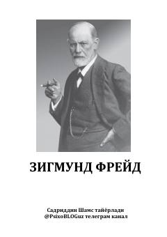

ZFMashhur psixolog Zigmund Freydning hayoti va ilmiy merosiga bag'ishlangan risola.
Ushbu kitob mashhur avstriyalik psixolog va psixoanaliz asoschisi Zigmund Freydning hayoti, ilmiy faoliyati va falsafiy merosiga bag'ishlangan. Unda olimning asosiy kashfiyotlari, qarashlari hamda psixoanaliz ta'limotining mohiyati haqida qiziqarli ma'lumotlar berilgan.